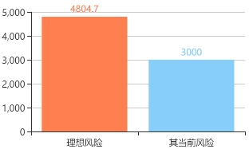

糖尿病风险评估
我国是糖尿病大国，患病人数为全球之冠。根据2013年中华医学会糖尿病学分会公布的调查结果，我国30岁以上人群中糖尿病患病率已达11.6%，且糖尿病前期（IGT）患病率达到50.1%。降低糖尿病患病风险成为国人健康的重中之重。
 危险因素
危险因素
| 危险因素 | 本次 | 上次 | 参考范围 |
|---|---|---|---|
| 年龄B4:BB4:B17 | 28 | 28 | 年龄增加风险升高 |
| 糖尿病家族史 | 无 | ||
| 高血压病史 | 无 | ||
| 体重指数（BMI） | 18.5≤BMI≤23.9 | ||
| 腰围 | ＜90cm | ||
| 高密度脂蛋白胆固醇 | ≥0.91mmol/L | ||
| 甘油三酯 | ≤2.22mmol/L | ||
| 空腹血糖 | ＜5.6mmol/L | ||
| 吸烟 | 吸烟 | ||
| 体力活动水平 | 充分 | ||
| 蔬菜水果摄入 | ≥500克/天 | ||
| 长期应用抗精神病或抗抑郁症类药物 | 无 | ||
| 长期使用可的松类药物 | 无 | ||
| 多囊卵巢综合征病史 | 无 |
评估结果

 您患糖尿病的风险等级
您患糖尿病的风险等级
中等风险
当前风险
按照您现有的危险因素水平，未来5年内，您的糖尿病发病风险为12
理想风险
1.6‰。将所有可改变的危险因素控制在理想水平时的发病风险。如果您将现有可改变的危险因素控制到理想水平，您的发病风险可降至1.6‰。
预防要点
-
倡导合理膳食、适量运动、戒烟限酒、心理平衡的生活方式，降低糖尿病的患病风险。
-
控制体重，保持BMI和腰围在理想范围。
-
持续规律的运动习惯，并注意肌肉训练，可提高胰岛素的敏感性，改善糖代谢水平。
-
有糖尿病风险者，至少每年去医院做一次静脉血的空腹血糖和/或口服葡萄糖耐量测定。